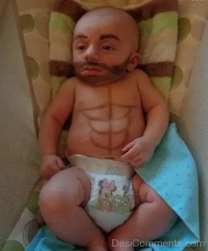
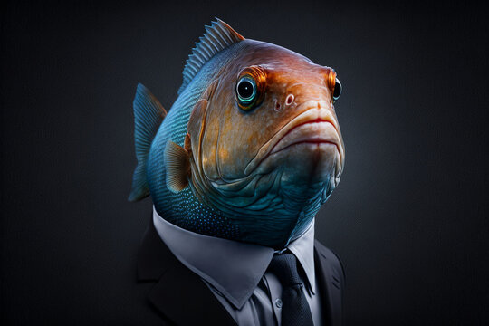
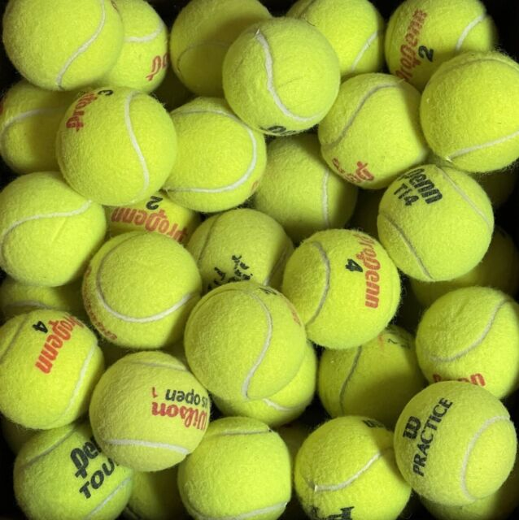
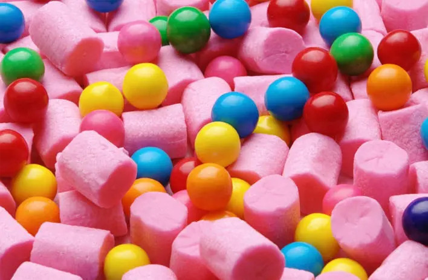

World's First Panda Born.... Purple?
Everyone in the world is in shock that this newly born baby panda, named Cheng Cheng, was born the color purple! Scientists say its due to the diet of the mother, as she ate a lot of grapes.

Stock Market Prices Increased Significantly!
Stock market prices have been rocketing up! Sources wonder if they are maybe going a little too high, based on the rest of the world's economy.

Popcorn, a Classic Snack, possibly Dangerous?!
Popcorn is always a popular snack, especially when at the theater or when you need something quick and salty to fill you up, but scientists are starting to believe it could be very unhealthy, and possibly containing dangerous chemicals.
Other News
   Baby born with 6 Pack?!
Famous Fisherman catches Fish with Full Suit and Tie?!
Tennis Ball Recall: What Tennis Balls are Really Made of.
Why Bubblegum has been banned in North Dakota
5 Things to give your child for Labor Day!